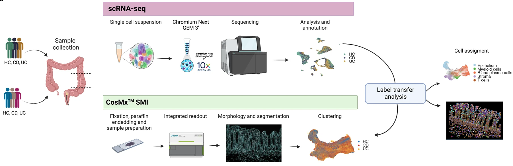

3 Study background
3.1 Goals
- Understand the experimental setup and samples used for the workshop
- Note the differences between CosMx and Xenium data during imaging
3.2 Background
This workshop will use CosMx Spatial Molecular Imager (SMI) data from the paper Macrophage and neutrophil heterogeneity at single-cell spatial resolution in human inflammatory bowel disease (Garrido-Trigo et al. 2023)1.
This data set was chosen because the authors have made their raw and annotated data available, along with the corresponding analysis code and a browsable data interface.
The study provides a clear biological contrast between health and disease states. This disease cohort consists of donors with active inflammatory bowel disease (IBD), a chronic inflammatory condition of the gastrointestinal (GI) tract, where immune cell organisation within the tissue plays a central role in disease pathogenesis.
Inflammatory bowel disease (IBD) is an umbrella term that includes two main GI tract disorders with different characteristics:
- Crohn’s disease (CD)
- ulcerative colitis (UC).
Spatial transcriptomic technologies enable gene expression to be measured at subcellular resolution while preserving the tissue architecture, allowing researchers to uncover spatial patterns and cell-cell interactions that would be lost in conventional bulk or single-cell RNA-seq data.
3.3 The experimental design and cohorts
Fig 1a from Garrido-Trigo et al. (2023).
The study included 9 CosMx slides of colonic biopsies, from a total of 9 donors:
| Cohorts | Abbreviated | Number of samples |
|---|---|---|
| Healthy controls | HC | 3 |
| Ulcerative colitis | UC | 3 |
| Crohn’s disease | CD | 3 |
The study includes three biological replicates per condition (HC, UC, CD). This provides enough variation to capture differences between individuals while maintaining manageable data size for hands-on analysis.
In this workshop, we will focus on the healthy control (HC) and Crohn’s disease (CD) samples.
In the original paper, the CosMX SMI cells were annotated via label transfer from the scRNA data. The spatial transcriptomics data will be processed independent of the scRNA data to demonstrate how differences in cellular composition and spatial organisation can be inferred directly from the spatial CosMx data.
3.4 Data generation: slides, samples, and field of views
This section will provide an overview of the high-level data generation steps that are conducted prior to any preprocessing or analysis steps. The steps begin from sample preparation, to sequencing of field of views (FOVs) and cell segmentation.
3.4.1 Sample preparation
In imaging-based spatial transcriptomics (im-SRT) workflows, tissue samples are prepared on slides. You may have a single, or multiple tissue samples per slide. This study utilises both for the colonic tissue.
3.4.2 Sequencing
In CosMx workflows, fields of views (FOVs) must be selected from the prepared slides. These are the spatial areas where sequencing will be conducted.
This step allows you to be selective of the regions, such as those of most importance to the research question or key hypotheses, and avoids sequencing areas that do not contain any tissue. For example, in highly heterogeneous tumour microenvironments, you can focus on selecting boundaries where infiltrated immune cells interact with cancerous cells.
Xenium does not have FOVs
Xenium uses a wide-field fluorescence microscope for automated image acquisition across a larger, continuous imaging area. This approach allows Xenium to map gene expression over the entire tissue region selected by the user, rather than stitching together multiple small, distinct FOV images.
For the workshop, you will be using a subset of FOVs - the first four FOVs from each of the six samples.
3.4.3 Cell segmentation
Cell segmentation is the computational step in imaging-based ST that identifies the boundaries of individual cells so that RNA molecules can be correctly assigned to each one. These utilise the stained images to identify cell border shapes that are necessary for cell-level analyses downstream.
The following images are of Xenium using two different staining approaches, H&E and immunofluorescent respectively, with the detected cell boundaries overlayed on both.
The H&E stain is often conducted as part of im-SRT protocols and is used to determine basic cell lineages from the morphology. In CosMx, this is often used to preview the slide for FOV selection.
The immunoflourescent stain demarcates more specific subcellular components. This stain is often used in the automated on-machine cell segmentation step.
Accurate segmentation is essential because it determines how reliably transcripts are assigned to individual cells, which directly affects downstream analyses. Commercial platforms like CosMx and Xenium include on-machine segmentation.
However, you may choose to re-run segmentation using independent tools such as Cellpose (image-based) or Baysor (transcript-based or hybrid) to improve boundary accuracy and adapt to specific tissue types.
H&E data is not available for this study
Spatial data analysis steps utilise H&E images for quality control steps and visualisation. For the workshop, the transcriptomics and spatial data will be used to inform these steps.